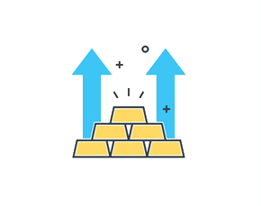

商家入驻
本项目是集微信/PC端的判断身份并进行线上交费的电商项目。
采用vue框架构建，以及vue的多页面应用，运用vue.js中的指令和服务与后台接口对接，
PC端和微信端实现数据同步，axios处理请求，进行数据交互，进行页面渲染，实现功能模块的逻辑判断。
民宿预订

本项目是一个民宿预订的移动微信端网站，其中涉及swiper触控滑动模块，百度地图API进行定位功能，dropload插件实现上拉加载下拉刷新模块，DateRangePicker插件实现日期的选中等。
保洁预订
本项目是一个民宿保洁预订的移动微信端网站，运用HTML5语义化标签+CSS3新特性进行页面布局，使用JavaScript实现某些功能的逻辑处理和某些页面的动态效果，使用WeUI组件库中部分功能进行快速开发，并且使用PS对图片进行切图处理，使用阿里矢量图标库。